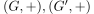
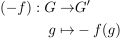
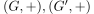

Inverse zu einem Gruppenhomomorphismus für abelsche Gruppen als Gruppenhomomorphismus
1. Satz
Seien  abelsche Gruppen und  ein Gruppenhomomorphismus.
Dann ist
ein Gruppenhomomorphismus.
Dann ist

1
ebenfalls ein Gruppenhomomorphism
Seien  abelsche Gruppen und ein Gruppenhomomorphismus.
Dann ist
ebenfalls ein Gruppenhomomorphism